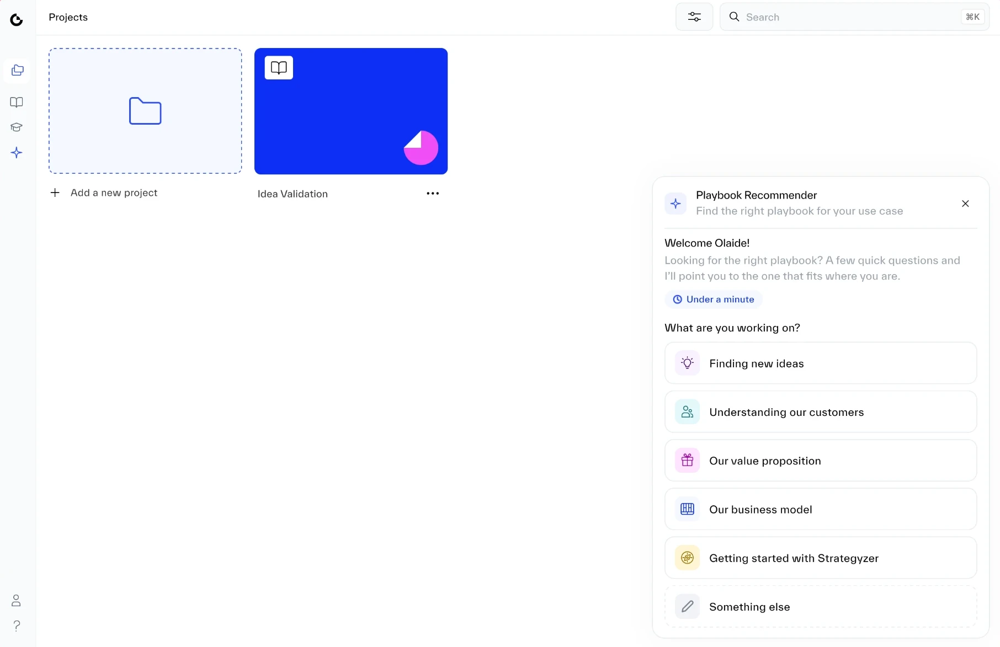
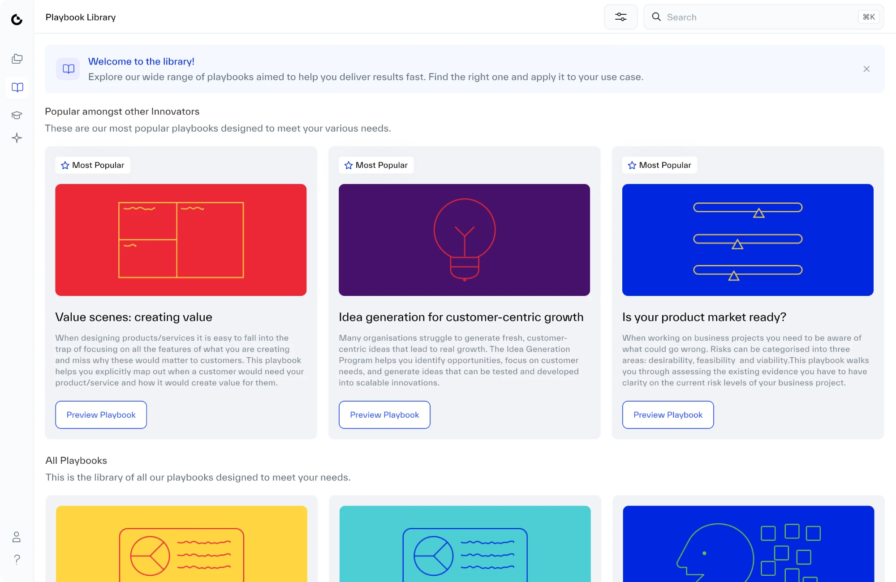
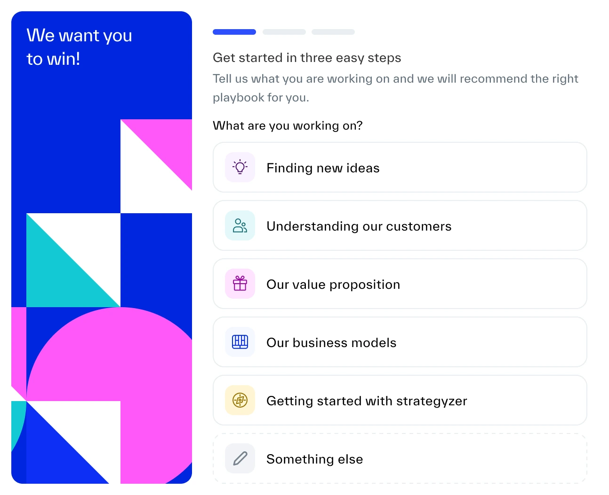
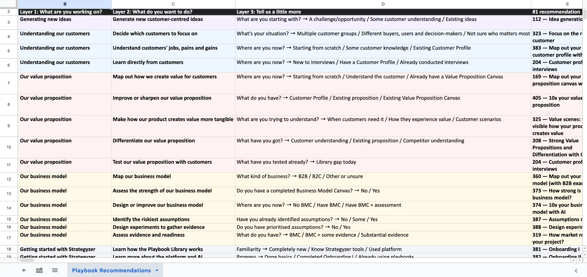

Olaide Arike Kaffo · Strategyzer case study
We set out to build an AI assistant. I made the case to ship a three-question Playbook Recommender first, and it moved every number that mattered.

The problem
of new customers never started a project.
They came with a real business problem, found a library of playbooks, and couldn't tell which one was right for them. Each playbook takes hours, so picking the wrong one wastes that time. People hesitated, guessed or gave up.
Enterprise
Guided by a coach, who asks two or three questions and says start here.
Self-serve
Left alone with the full library, just when they know the least.

Research
Group one
Testing an idea before pitching investors. New to Strategyzer's terms.
Group two
Testing an idea before presenting to senior leaders, often with half the work already done.
Both groups
In every conversation, the most common complaint was choosing a playbook. Even our own coaches said it.
If our coaches found it hard, the problem was in the product. Returning customers faced the same choice every time they started something new.
The first bet
Strattie AI was an assistant across the whole platform, like having a Strategyzer coach beside you at every step. I designed it and built a working prototype with Claude, using FondUI, our design system.
What the prototype taught us
A good coach asks two or three questions before recommending anything. In an open chat, the assistant often answered before it had asked them.
Vague requests, a changing library and knowing when to say "I don't know" were more than our small team could take on at the time.
People came to us because they couldn't put their problem into words. A chat box asks them to do exactly that.
The reframe
Engineering couldn't build the full assistant in the time frame we needed. The team's first instinct, a fair one, was to build a smaller version of it.
I pushed back.A smaller chatbot is just a worse chatbot.
| Question | Smaller chatbot | Guided Recommender |
|---|---|---|
| Designing the conversation | Still needed in full | A few fixed questions |
| Recommending playbooks that don't exist | Still possible | Not possible |
| Describing the problem | People have to type it | People pick from options |
| Shows whether guidance helps | Not clearly | Yes |
So I changed the question
What's the smallest assistant we can build?
What's the one job that matters most right now?
One job came first every time. Finding the right playbook is where every new project starts, and where people kept getting stuck.
Making the case
Our Head of Product was keen on the assistant. On a call, I showed them the working prototype and my research. Every group we spoke to needed the same thing, help choosing where to start.
The pushback
Customers were asking for AI, and a set of guided questions could look like we were falling behind.
My answer
I wasn't against AI. The platform will need it. But choosing a playbook comes first. If people get stuck there, they'll leave before they ever see an AI feature. Fix that first, and every AI feature we add later reaches people who are already getting value.
Decision
Ship the Recommender first. The assistant comes next.
The trade-off
What it bought us
What it cost · moved to a later release
That was hard to let go of. I'd rather ship one job done well than several half-done.
Designing the Recommender · the form
I tried three shapes. A pop-up covered the library, and a tall side panel looked like a chat that wasn't there. The corner panel kept the page usable.
Borrowed from Asana's AI menu. Each answer shrinks to a short message, so the panel stays short.
I dropped the tour-style version I explored first. People come back to this whenever they're stuck.

Explored first. The tour-style version, with its progress bar and big welcome screen.
Designing the Recommender · the logic
I built the map in two days from how customers described their situations. It isn't generated by AI, so when a path is wrong we can see it and correct it.
Question one asks what you're working on in everyday words, for founders new to Strategyzer. Question three only appears when it changes the answer, so people with work done can skip ahead.

Designing the Recommender · decision 6
From recommendation to work
Tested and built in code
test sessions with coaches, customer teams and customers, about 8 each
Biggest change
I rewrote the questions so they were easier to understand, and so no one worried about picking the wrong answer.
Results
Four months of data, comparing the months before and after launch.
was 57%
of new customers start a project and a playbook
was 68%
from customer surveys and our customer success team
was about 10%
return within 30 days of signing up. Most come back weekly.
after the release email
of cancelled customers came back to try it within two weeks
Beyond the numbers
How we work
What I built with Claude went live as it was. Our engineer connected it to the data behind it instead of rebuilding it from designs. The team now works at least twice as fast.
Product strategy
Mapping every customer need to a playbook showed a gap. Nothing helped people test whether customers want their offer, something many customers came to us needing. The Recommender says so instead of guessing, and the team that writes playbooks started on one straight away.
What's next
I've recommended building Strattie AI, the assistant I prototyped at the start, to help at every step after the first. It's on the roadmap for the next year, and it can reuse the question map.
Shipping one focused thing first didn't shrink the vision. It made the case for it.
Speaker notes
Press P for presenter view in a second window.